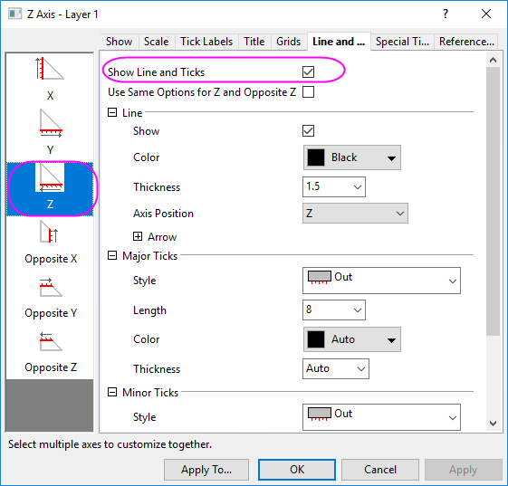

Wählen Sie eine Z-Spalte (oder einen Bereich einer Z-Spalte) aus. Wenn diese Z-Spalte eine verbundene X- und eine verbundene Y-Spalte hat, dann werden diese X- und Y-Spalte verwendet; ansonsten werden die X- und Y-Standardwerte des Arbeitsblatts verwendet.
Wählen Sie die gewünschten Daten aus. Wählen Sie im Menü .
TERNARYRIGHT.otpu (installiert im Origin-Programmordner).
Das rechtwinklige Ternärdiagramm ist eine Variante des Ternärdiagramms, wird aber in rechtwinkligen Koordinaten gezeichnet. Die X- und Y-Achse sind orthogonal und gleichseitig. Die Z-Achse ist die Hypotenuse.
Wie bei Ternärdiagrammen sind die Eingabedaten in einem rechtwinkligen Ternärdiagramm normiert. Das bedeutet, dass die Summe der absoluten Zellenwerte in jeder Zeile gleich 1 oder 100: |x|+|y|+|z|=1 oder 100 ist. Sie können sich auf die relevante Beschreibung im Ternärdiagramm beziehen.
Um die Achsen benutzerdefiniert anzupassen, klicken Sie bitte doppelt auf die horizontale oder vertikale Achse, um den Dialog Achse zu öffnen. Anschließend:
das aber mit einer anderen Richtung. Die Hilfsstriche sind diagonal und parallel zur Z-Achse.
